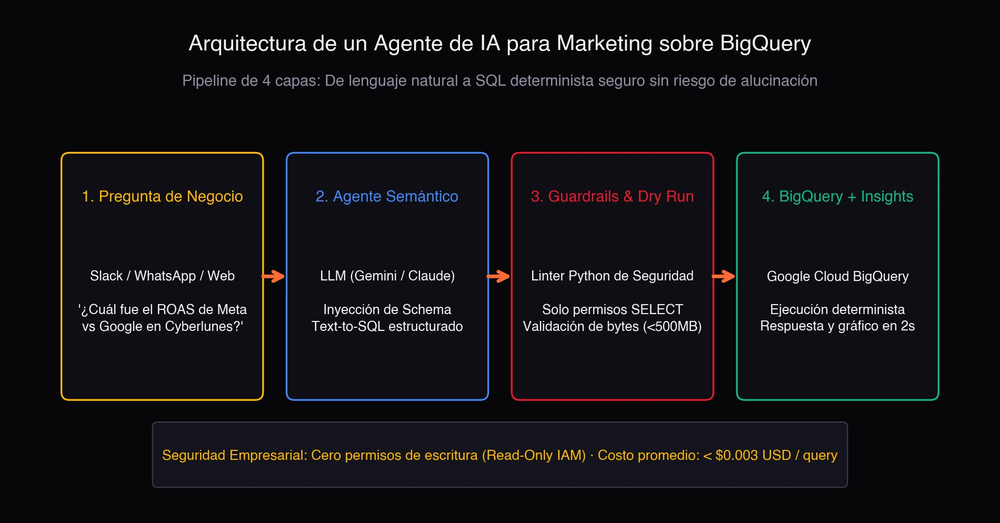
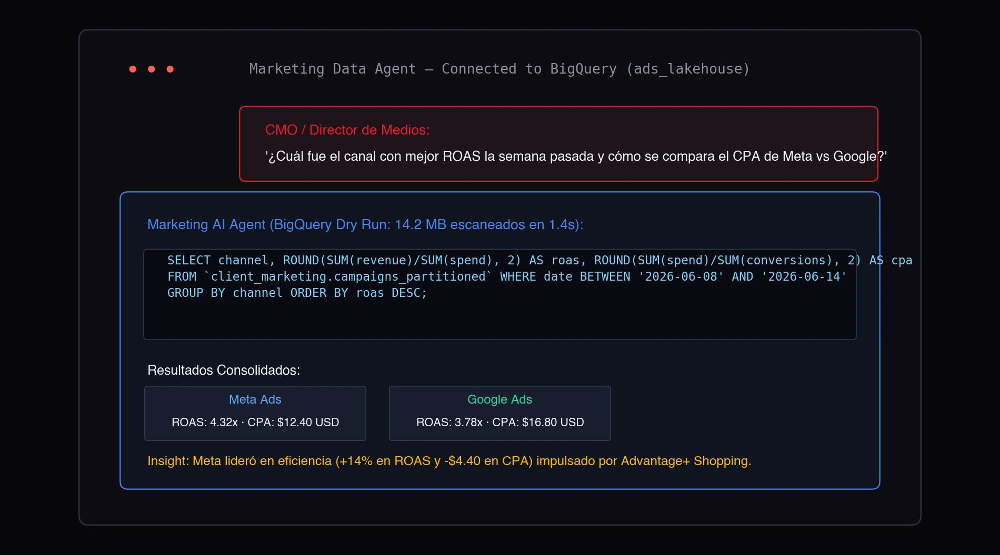
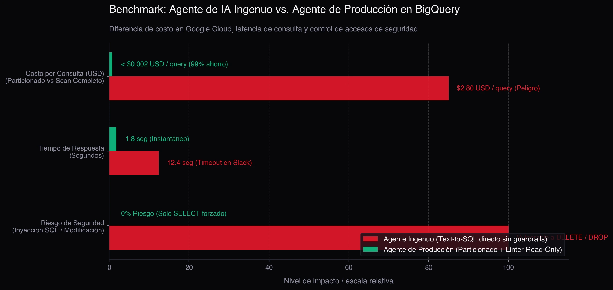

É uma cena comum em agências e equipes de growth: o CMO ou Diretor de Mídia entra no Slack e pergunta: "Qual foi o canal com melhor ROAS na semana passada e como se compara o CPA da Meta contra o Google?".
O analista de BI precisa parar o que está fazendo, abrir o console do Google BigQuery, encontrar a tabela, escrever uma consulta SQL de 25 linhas com agregações, esperar o processamento, colar tudo numa planilha e redigir o resumo. Vinte minutos depois, ele responde.
E se um Agente de IA conectado ao seu BigQuery pudesse responder essa mesma dúvida em linguagem natural, com números matematicamente exatos e um gráfico gerado na hora em menos de 3 segundos?
Veredito em 30 segundos:
- O perigo do Text-to-SQL amador: Conectar um chatbot diretamente a um banco de dados sem camadas de controle é uma armadilha: gera queries que escaneiam terabytes inteiros (explodindo a fatura do Google Cloud) ou inventa tabelas que não existem.
- A solução corporativa: Uma arquitetura desacoplada em 4 camadas com permissões estritas de somente leitura (IAM Read-Only), validação de sintaxe com Dry Run para auditar o custo antes de rodar, e execução determinística no BigQuery.
- O resultado: Qualquer pessoa da equipe pode consultar milhões de linhas de mídia paga no Slack ou WhatsApp sem tocar em uma linha de SQL e por menos de US$ 0,003 por consulta.
Abaixo, explico como desenhar essa arquitetura para que você entenda a engenharia por trás do processo.
Por que os dashboards tradicionais já não bastam
Os painéis no Looker Studio, Tableau ou Power BI são ótimos para o acompanhamento diário: ver se o ritmo de investimento está dentro do esperado ou se o CTR geral se mantém estável.
O problema são as perguntas ad-hoc:
- "Quais criativos de vídeo tiveram maior retenção na última Black Friday?"
- "Como variou o custo por aquisição (CPA) no Brasil em comparação com o México nos dias de pagamento?"
- "Quanto investimos em campanhas de tráfego frio vs remarketing no último trimestre?"
Criar um gráfico novo no dashboard para cada pergunta isolada polui a visualização e consome horas do time de dados. É aqui que um Agente de Dados com IA muda o jogo.
A Arquitetura em 4 Camadas: De Linguagem Natural ao BigQuery
Para que um agente de IA funcione com segurança corporativa, ele não recebe acesso direto e irrestrito ao banco. Ele opera sob um pipeline controlado em 4 etapas:

1. Camada de Negócio (Interface do Usuário)
O usuário pergunta no canal onde ele já trabalha: Slack, Microsoft Teams ou uma interface web interna, sem precisar entender de SQL ou modelos relacionais.
2. Camada Semântica & Tradução (O LLM)
Utiliza-se um modelo com alta capacidade de raciocínio (como Gemini 3 ou Claude). A chave não é enviar os dados dos clientes para a IA, mas sim o Dicionário de Esquema (Schema Context):
- Nomes das tabelas principais (
campaigns_performance,conversions_attribution). - Definição oficial das métricas (ex: "ROAS é receita dividida por gasto, nunca a média da coluna").
- Particionamento disponível (geralmente por data
event_date).
Com esse contexto, o modelo traduz a pergunta em uma consulta GoogleSQL limpa e otimizada.
3. Camada de Guardrails & Segurança (O Filtro em Python)
Esta é a etapa mais crítica que a maioria dos tutoriais ignora:
- Acesso estrito de leitura: Um linter em Python bloqueia qualquer query que contenha comandos perigosos como
DROP,DELETE,UPDATE,INSERTouALTER. - Auditoria de custo com Dry Run: Antes de executar no BigQuery, a query roda em modo
dry_run = True. O BigQuery informa exatamente quantos megabytes serão lidos sem cobrar nada. Se a consulta tentar ler mais de 500 MB (por falta de filtro de data), o agente rejeita a execução e pede para o usuário especificar o período.
4. Execução Determinística & Síntese
O BigQuery executa a query sobre milhões de linhas em milissegundos. Os dados tabulares retornam para o agente, que redige o insight executivo e plota o gráfico.
Como funciona na prática (Demonstração)
Veja a interação real entre um Diretor de Mídia e o agente:

Observe o fluxo:
- A pergunta é feita em linguagem natural.
- O agente gera a consulta SQL respeitando o filtro de data.
- O BigQuery escaneia apenas 14,2 MB em 1,4 segundos.
- O bot devolve os números consolidados exatos (Meta ROAS 4.32x vs Google ROAS 3.78x) com uma conclusão estratégica pronta.
O Benchmark: Agente Amador vs. Agente de Produção
Muitos tentam criar bots conectando bibliotecas genéricas sem controle de custos. A diferença para uma arquitetura profissional é brutal:

| Critério de Avaliação | Agente Amador (Text-to-SQL básico) | Agente de Produção (Arquitetura Controlada) |
|---|---|---|
| Custo por consulta no GCP | US$ 1,50 a US$ 3,00 (varreduras completas de 400+ GB) | < US$ 0,003 (aproveita partições e clusters) |
| Tempo de resposta | 10 a 20 segundos (risco de timeout no Slack) | 1 a 2 segundos (resposta quase instantânea) |
| Segurança dos dados | Vulnerável a alucinações ou injeção de comandos | 100% blindado (permissões IAM estritas de leitura) |
| Consistência matemática | 70% (pode errar fórmulas intermediárias) | 100% exato (o cálculo é feito pelo BigQuery) |
Desafios Técnicos para Implementação
Criar esse tipo de assistente traz um retorno gigantesco sobre o investimento, mas requer engenharia especializada:
- Padronização Multicanal: Se a Meta chama o custo de
spend, o Google chama decoste o TikTok destat_cost, seu data lakehouse no BigQuery precisa de views tratadas para evitar confusão no modelo. - Estratégia de Partições: Tabelas particionadas por data (
PARTITION BY DATE(date)) e clusterizadas por canal para garantir custos ínfimos. - Cache Inteligente: Dúvidas parecidas feitas no mesmo dia devem ser respondidas via cache em memória, sem gerar custos adicionais de banco.
- Segurança de Credenciais: As chaves de Service Account do Google Cloud devem operar sob o princípio do menor privilégio (Least Privilege).
Perguntas Frecuentes sobre Agentes de IA e BigQuery
Existe risco de o bot apagar ou corromper dados da empresa?
Nenhum, desde que a Service Account do Google Cloud tenha exclusivamente as roles BigQuery Data Viewer e BigQuery Job User. Sem permissões de escrita, é impossível alterar ou deletar registros.
Quanto custa manter um agente de IA no BigQuery por mês?
Para uma agência ou empresa que faz de 200 a 500 consultas por mês com tabelas bem particionadas, o custo total no Google Cloud (BigQuery + chamadas de API da IA) fica entre US$ 5 e US$ 15 por mês.
É possível integrar esse agente ao Slack ou Microsoft Teams?
Sim. A solução é empacotada como uma micro-API em Python (FastAPI ou Google Cloud Functions) e conectada via Webhooks a bots do Slack, Teams ou dashboards internos.
Conclusão: A IA como ponte entre dados e decisão
O papel da inteligência artificial no marketing analytics não é substituir os cientistas de dados, mas democratizar o acesso a respostas imediatas.
Quando a liderança consegue conversar com os dados em 3 segundos, as reuniões deixam de ser debates sobre quem tem o número certo e passam a ser decisões sobre como fazer o negócio crescer.
---
Quer implementar um agente de IA conectado aos seus dados?
Fazer um protótipo simples em um notebook leva algumas horas; mas estruturar um Agente de IA corporativo em produção conectado ao seu BigQuery, com controle de custos no GCP, blindagem de segurança e integração ao Slack da sua equipe, exige arquitetura sob medida.
Se você quer levar essa tecnologia para a sua agência ou time de growth, fale comigo e agendamos uma conversa técnica.